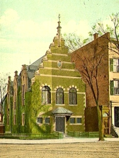

by
Stefan Bielinski
Tailor Frans Janse was the first member of the Pruyn family in early Albany. Admittedly a Catholic, we seek documentation of his supposed French ancestry. Four sons established the Pruyn family in eighteenth century Albany. Daughters (Anna and Maria) became matriarchs of mainline early Albany families.
Three Pruyn households were in the city in 1720. In 1742, only Samuel Pruyn was noted on the freeholder list for the city's three wards and surrounding Rensselaerswyck. Although the Pruyns occasionally held minor offices and often performed civic services, only Samuel Pruyn reached the station of alderman - representing the third ward from 1729 to 1732.
In 1756, only the home of shoemaker John Prune was listed on the census. However, in 1763, six "Pruyns" appeared on a list of Albany freeholders.
But in 1790, seven Pruyn families were counted in the booming city including the Pearl Street home of businessman John F. Pruyn. The family also became prominent in Rensselaerswyck.
In 1813, the first city directory counted six Pruyn-name households with Albany addresses. All but one of them were located in close proximity to the first Pruyn home on what became Pearl Street.
Albany artist Francis Pruyn created an often-utilized sketch of the first Van Rensselaer Manor House just prior to its destruction in 1839.
The name "Pruyn" has been a part of Albany's historic iconography in a number of manifestations. The Pruyn Library, a colonial revival building on the corner of what became Clinton Avenue and North Pearl Street - and shown in this vintage postcard, was an Albany landmark from 1901 until it was razed in 1963. It was named for native son John V. L. Pruyn (1811-77), jurist, congressman, and noted antiquarian.
The Augustus Pruyn collection of photographs and artwork at the New York State Library is an important resource for the history of Albany. The Pruyn House was built for Casparus F. Pruyn in 1830 and is the headquarters of the Historical Society of the Town of Colonie.
notes
first posted 10/25/02; last updated 5/11/17
 Sources: This profile is derived chiefly from family and community-based resources. Online resources summarize traditional wisdom on the family! Pruyn family papers; Additionally, An Albany Girlhood is an enchanting must-read for insight on the family in the Victorian age.
Sources: This profile is derived chiefly from family and community-based resources. Online resources summarize traditional wisdom on the family! Pruyn family papers; Additionally, An Albany Girlhood is an enchanting must-read for insight on the family in the Victorian age.